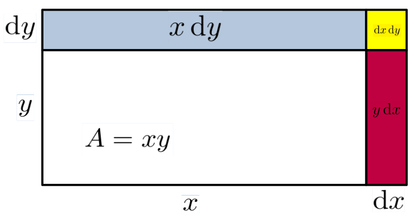
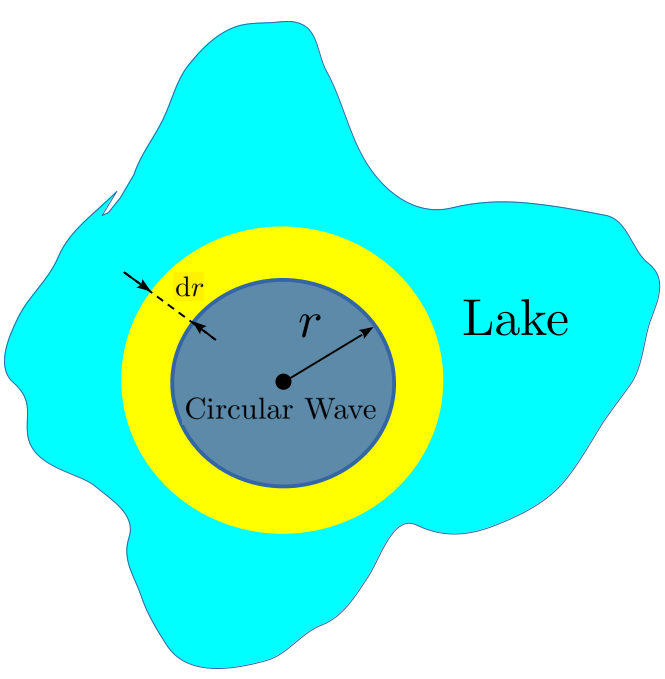

Chapter4Differentials, Differentiation, and the Derivative
Section4.1Historical Introduction
By relieving the brain of all unnecessary work, a good notation sets it free to concentrate on more advanced problems, and, in effect, increases the mental power of the race.
Since the Covid-19 pandemic of \(2020\) the following story has become very popular. In \(1665\) an outbreak of Bubonic Plague closed Cambridge University. One of the students, a young man named Isaac Newton 3 , decided to continue his studies on his own at his country home in Woolsthorpe, Lincolnshire, UK. It was during this time that Newton worked out the basic principles of Optics, his Law of Universal Gravitation, and his version of the Calculus. He was under \(25\) years old at the time.
The basic facts of this story are essentially correct. The Plague did close Cambridge University in \(1665\text{,}\) Newton was under \(25\text{,}\) he did retire to Woolsthorpe, and he did investigate Optics and Gravitation during this time. The mathematics that he needed did not exist at the time so he invented it. Today we call it Calculus.
But telling Newton’s story this way is misleading. It leaves the impression that he did all of these things during his two years at Woolsthorpe; sewed them up in a neat little package; bequeathed them to the rest of humanity and then ascended directly into heaven as a scientific demi-god.
This is not true. In fact, he continued to work on optics after returning to Cambridge, but did not publish his first results until \(1672\text{.}\) He worked on his gravitational theory until at least \(1687\) when he published the first edition of his book Philosophiae Naturalis Principia Mathematica (Mathematical Principles of Natural Philosopy).
When you’re a genius you can do that.
Newton’s story is often treated as inspirational but the fact that he did so much, so young seems to us (the authors of this book) more intimidating than inspiring. We are considerably older than \(25\) and taken together we haven’t done anything as impressive as Newton did in his youth.
But comparing ourselves to Newton is pointless. Newton was a true genius. We are merely ordinary people just like you. We didn’t invent Calculus, and you don’t have to either. Newton did that for us. Everyone since has merely had to learn it; a much less imposing task.
Well, almost everyone.
About ten years after Newton entered Cambridge University, and quite independently, Gottfried Wilhelm Leibniz 5 developed his rules for Calculus while employed as a diplomat in Paris from \(1672\) to \(1674.\) He was \(26\) years old at the time.
Though their approaches are fundamentally different, the computational techniques they worked out were essentially equivalent. Newton’s approach was dynamic. He was thinking about objects in motion: the moon, the planets, and falling apples. Leibniz was thinking about geometric relationships, more like Fermat or Descartes.
As a matter of pure logic it doesn’t really matter which viewpoint is adopted. However, there are some situations where thinking dynamically (like Newton) is more helpful, and others where thinking geometrically (like Leibniz) is more helpful. Throughout this text we will switch back and forth, adopting whichever approach seems to us more advantageous for a given situation. You should too.
Newton was a private, almost secretive man. At first he didn’t tell anyone about his invention and so Leibniz was first to publish a paper on Calculus in \(1684\text{.}\) We referred to his paper at the end of Chapter 3:
A New Method for Maxima and Minima, as Well as Tangents, Which is Impeded Neither by Fractional nor Irrational Quantities, and a Remarkable Type of Calculus for This.
From this rather imposing title we can infer that Leibniz was aware that his Calculus would empower mathematicians to more easily solve both old problems (like Snell’s Law) and new problems alike.
In his paper Leibniz displayed all of the General Differentiation Rules you will see at the beginning of the next section. He called his computational rules “Calculus Differentialis” which translates loosely as “rules for differences.” In English this is called Differential Calculus.
Newton and Leibniz each created and used a notation that reflected his own viewpoint. Newton’s notation has (mostly) fallen away over the years. Leibniz’ notation is much more intuitive and has become standard in mathematics.
Both assumed that a varying quantity could be increased or decreased by an infinitely small amount. Leibniz called this an infinitesimal difference, or a differential and denoted it with the letter ``d’’ — presumably for ``differential’’. So if \(x\) is some quantity, then its differential, \(\dx{x}\text{,}\) represents an infinitely small increase or decrease in \(x.\)
To talk of infinitely small increments may sound strange to you. It does to most people, because it is in fact a truly weird idea. Johann Bernoulli 7 described differentials this way:
“. . . a quantity which is increased or decreased by an infinitely small quantity is neither increased nor decreased . . .”
―From “Great Moments in Mathematics After 1650,” Lecture 32
You may judge for yourself how helpful this is. Johann and his brother Jacob both learned Calculus from Leibniz, and both went on to mathematical greatness in their own right.
The idea of an infinitesimal was not new. Before the invention of Calculus mathematicians had been using the notion both successfully, and informally, for many years. Galileo and his students used them. So did Archimedes. The idea was ``in the air.’’
But the vagueness of the notion was very troubling. In fact, late in his life Newton attempted to repudiate the idea of differentials by founding his version of Calculus on what he called prime and ultimate ratios. Leibniz simply continued the tradition of using differentials and invented the notational formalism that we still use today.
Although neither of them could precisely answer the question, “What is a differential?” neither Leibniz nor Newton allowed this to hold them back. They developed their computational schemes, verified that they worked — at least on the problems they were interested in — and proceeded to use them to attack other problems. That was enough for them. Both men followed the example of their forebears and treated the notion of an infinitely small increment as a convenient fiction. Something that doesn’t exist in reality but is useful as way to think about certain problems. We will adopt a similar attitude — at least for now.
But this is mathematics. Eventually we will reach a time of reckoning when we must define our concepts clearly and precisely. All of them, not just the convenient ones.
The question ``What is a differential?’’ cannot simply be swept under the rug and ignored indefinitely. Since everything we do will depend in a fundamental way on differentials, we must resolve this question or all of our work will rest on a foundation of shifting sands and we will never really know whether it is valid or not. If we do not proceed carefully, logically, from clearly stated first principles we can never truly know if what we are doing is valid.
Indeed, Newton, Leibniz, and generations of mathematicians since understood this very well and worked hard to either give rigorous meaning to the idea of a differential or to abandon it altogether in favor of some other concept. Newton’s idea of prime and ultimate ratios was probably the first such attempt.
But it took some of the greatest minds in history nearly two hundred years to resolve the question of differentials.
Well, resolve might be too strong a word. The theory of limits, adopted in the late \(19\)th century, doesn’t resolve the matter as much as it simply avoids it altogether. You’ll see what we mean when we come to Chapter 17
In the mid-twentieth century Abraham Robinson 9 (\(1918-1974\)) was finally able to put a develop the notion of a differential in a solid, rigorous manner. Unfortunately, to do this Robinson required some high level techniques from the field of Mathematical Logic which are quite beyond the scope of this text.
Besides, Calculus already had a rigorous foundation. The theory of limits had been established nearly a hundred years before Robinson’s work and it provides an entirely adequate foundation for Calculus. Unfortunately, the theory of limits does very little to help anyone actually use Calculus. It simply provides rigor for the logical foundations. On the other hand the differentials of Leibniz and Robinson do provide aid in using Calculus. Newton, Leibniz, and their contemporaries did truly amazing things by treating differentials as convenient fictions. There is no reason we can’t do the same.
For now we will follow the example of our forbears and develop the Rules For Differences (Differential Calculus ) using Leibniz’ differentials. In particular, we will not concern ourselves with the question, ``What is a differential?’’
There is precedent for this. The ancient Greek mathematician Euclid 10 , (325BC - 265BC) defined geometric points with the phrase ``A point is that which has no parts.’’ But that is simply a clever way of admitting that he didn’t know what points are, despite the fact that they are enormously useful. What is a point, really, but a convenient fiction? And yet the notion of a point is foundational for all of Geometry. After all, what is a line but the relationship between two points? Moreover, mathematical points are highly intuitive and can be visualized in the mind’s eye as long as we don’t look too closely.
Differentials will play a similar role in Calculus.
Section4.2The General Differentiation Rules
. . . mathematical analysis is to the technical man merely a tool or instrument for doing his work, of which he must have not only the knowledge and understanding but also the expertness which he has with other tools.
You’ve got to learn your instrument. Then, you practice, practice, practice. And then, when you finally get up there on the bandstand, forget all that and just wail.
Subsection4.2.1Warning: Be Sure You Understand the Purpose of This Chapter.
Imagine a surgeon using a scalpel, an auto mechanic using a torque wrench, or a professional golfer swinging a club. These people endure countless hours of practice learning to use the fundamental tools of their trade. It is not fun, nor do they expect it to be. They do it in order to
become so skillful that they can use their tools seamlessly; so they can focus on what they are doing, not how they are doing it. They don’t think of the tool, they think of the task. The tool simply becomes an extension of their hands. In precisely the same way, the differentiation rules we’ll be discussing in this chapter are the basic tools of your trade and you need to become so skillful with them that you can use them without thinking about them.
The computational rules in the table at the right are the basic tools of Differential Calculus. They need to become an extension of your mind. You need to be able to perform these calculations while holding a larger problem in your mind. Sometimes a much larger problem. You need to become so familiar with them that they become the simple part of bigger problems.
The purpose of this chapter is to give you practice with these computations; to give you a chance to internalize them before you have to use them in a larger context. For that reason we will be providing a lot of drill problems for you to practice on. Do them.
These drill problems are not important in themselves, but once we move past this chapter it will be assumed that you can compute a differential -- even if the computation is long and complex -- easily. If you have not given yourself enough practice here, you will struggle through the rest of this course. And the ones that come after. You may even fail.
So, right here, right now, resolve to do all of the problems in this chapter. Do them even if your instructor has not assigned them all. The more practice you get with this now, the less you will struggle later. Find other problems from other books and do them too. Make up your own problems. Practice until you can compute a differential with a quick glance.
This is important. We, the authors of this text, know what we are talking about. Listen to us. Your goal in this chapter is to completely internalize these differentiation rules. They need to become second nature to you. The work you do now, here, will pay off in the long run.
Subsection4.2.2Differentials
It is better to do the right problem the wrong way than the wrong problem the right way.
The General Differentiation Rules are surprisingly easy to learn and remember. Moreover, despite the fact that we have six entries in our table there are really only three rules. The Constant Rule, The Sum Rule, and the Product Rule are fundamental. The other three, The Constant Multiple Rule, The Power Rule, and the Quotient Rule are straightforward consequences of the first three. We only state them separately for convenience.
We call these rules ``general’’ because each one of them can be applied to a wide variety of expressions. In addition to the general rules there is a large set of specific rules that only apply to specific functions. We will come back to these beginning in Chapter 6
To begin, suppose a point is moving along the \(x\)-axis. As in Chapters 2and 3 when we think of a point in motion we write \(x(t)\) to express the idea that the position \(x\text{,}\) depends on the time, \(t\text{.}\) At a specific time, \(t\text{,}\) the position \(x(t_1)\text{,}\) is expressed as more compactly as \(x_1\) and at time \(t_2\) the position is \(x_2\text{..}\)
The (small, finite) change in \(x\) is the difference between \(x_2\) and \(x_1\text{:}\)\(x_2-x_1\text{,}\) and the (small, finite) change in \(t\) is the difference between \(t_2\) and \(t_1:\)\(t_2-t_1\text{.}\)
It is customary to denote these small, finite changes with the notation:
\begin{equation*}
\Delta x = x_2-x_1, \text{ and } \Delta t= t_2-t_1.
\end{equation*}
We will denote infinitely small changes in \(x\) and \(t\) as \(\dx{x}\) and \(\dx{t}\text{.}\) The symbol \(\dx{x}\) is called the differential of \(x\text{.}\)
Notationally, the distinction between \(\Delta x\) and \(\dx{x}\) is small, but conceptually it is profound. When we write \(\Delta x\) there is some measurable distance between \(x_2\) and \(x_1.\) When we write \(\dx{x}\) the distance between \(x_2\) and \(x_1\) is immeasurably (infinitesimally) small.
If \(x\) is changing in time, \(\dx{x}\) represents how much \(x\) changes in an infinitesimally small increment of time \(\dx{t}\text{.}\) If the concept of an infinitely small increment troubles you (it should) it is safe, for now, to think of \(\dx{x}\) as a very, very, very,} small change in \(x\text{.}\)
In general, if two variables, say \(x\) and \(y\text{,}\) are related we will be interested in asking (and answering) the question: If \(x\) is incremented by \(\dx{x}\) how will \(y\) be affected?
Subsection4.2.3The General Differentiation Rules
Now that we understand our notation the first differentiation rule is quite obvious. In fact, it is the same whether we are thinking of a small finite change or of a differential. If \(x\) is unchanging, if it is not moving, then ``the (infinitesimal) change in \(x\)’’ between two different times is zero. It doesn’t really matter whether we are talking about a finite \(\Delta x\) or an infinitesimal \(\dx{x}\text{.}\) Both are zero because \(x\) doesn’t change. Thus we have the following rule:
Compute the differential, \(\dx{y}\text{,}\) of each of the following:
(a)
\(y=1\)
(b)
\(y=\pi \)
(c)
\(y=\frac{\sqrt{2}}{\pi}\)
(d)
\(y=\sqrt{2}\pi\)
(e)
\(y=2,000,000,000\)
(f)
\(y=\sin^2(\theta)+\cos^2(\theta)\)
Problem4.8.
In Table 4.5 we stated the Constant Rule using \(a\) as the constant, in the statement above we used \(x\text{,}\) and in [cross-reference to target(s) "DRILLConstantRule" missing or not unique] we used \(y\text{.}\) Does it matter what symbol we use? Explain.
This first rule was particularly simple since only one quantity was involved and it was unchanging. The second is only slightly more complex. Suppose we have two variable quantities, \(x\) and \(y\text{.}\) Then:
Suppose \(a\) is a constant and \(x\) is a variable. Since \(\dx{(ax)}= ax_2-ax_1\) is the differential between infinitely close values of \(ax\) we see that the differential of \(ax\) is given by:
To get a sense of how we will be using differentials consider the line which is the graph of the equation \(3x+2y=5\text{.}\) Let’s differentiate both sides of this formula using the tools we have so far. Obviously if two quantities are equal then their differentials are also equal. So,
Notice that [cross-reference to target(s) "EQslope" missing or not unique]) can be rearranged as follows: \(\dfdx{y}{x} = -\frac32. \) So it appears that the differential ratio \(\dfdx{y}{x}\) is the slope of our line. This makes sense since \(\dfdx{y}{x}\) is the (infinitesimal) change in \(y\) divided by the (infinitesimal) change in \(x\text{.}\) From your study of lines in Algebra you know that the change in \(y\) divided by the change in \(x\) is the definition of slope. It continues to be the slope even if the changes in \(x\) and \(y\) are infinitesimal.
Drill4.11.
Compute \(\dx{y}\) for each of the following:
(a)
\(y-x=0\)
(b)
\(y-x=5\)
(c)
\(y-2x=7\)
(d)
\(20x-y=-1\)
(e)
\(y=0.0002x\)
(f)
\(\frac{y}{x}=\pi\)
(g)
\(y=3+2x\)
(h)
\(\frac{7-\pi y}{x}= 17\)
(i)
\(y=\sqrt{2}x\)
(j)
\(y=(\pi+\sqrt{2})x\)
(k)
\(y=\pi x+\sqrt{2}x\)
(l)
\(y=\dfrac{(\pi+\sqrt{2})x}{x}\)
(m)
\(y=\dfrac{(1-x)x^4}{x^3-x^4}\)
In his \(1684\) paper on Calculus, Leibniz presented all of the General Differentiation Rules with no justification whatsoever, stating simply that
“The demonstration of all this will be easy to one who is experienced in these matters . . .”
Our first three rules seem to bear this out. They are really the same as the analogous rules for finite differences. His claim is a bit more suspect for the next differentiation rule.
Think of the product \(xy\) as the (A)rea of the rectangle with sides of length \(x\) and \(y\) so that \(A=xy\text{,}\) as shown in the following sketch.

If we increase the sides by \(\dx{x}\) and \(\dx{y}\text{,}\) respectively, then the area will change by an infinitesimal amount \(\dx{A}\) which is the sum of areas of the blue, yellow, and red regions shown in the sketch. The area of the blue region is \(x\dx{y}\text{,}\) the area of the red region is \(y\dx{x}\) and the area of the yellow region is \(\dx{x}\dx{y}\text{.}\) Since \(\dx{A}\) is the sum of these three regions we have
But remember that \(\dx{x}\) and \(\dx{y}\) represent infinitely small changes. Thus, their product \(\dx{x}\dx{y}\) is even more infinitely small than they are.
In fact, the product \(\dx{x}\dx{y}\) is so small compared to any of the that other terms in [cross-reference to target(s) "EQDifferentialProductRule" missing or not unique] that it simply doesn’t matter. So we will ignore it.
This leaves us with \(\dx{A}=\dx(xy)=x\dx{y}+y\dx{x}\) verifying the Product Rule.
You should feel at least a little uncomfortable with this logical sleight of hand. Some questions present themselves immediately: How can we choose not to ignore infinitesimals like \(\dx{x}\) and \(\dx{y}\text{,}\) but then choose to ignore their product \(\dx{x}\dx{y}\text{?}\) What happens if \(x\) or \(y\) is negative? What happens if \(\dx{x}\) or \(\dx{y}\) is negative?
Perhaps Leibniz left out the demonstrations (proofs) of his rules because he knew they would be controversial. However, he was not lying when he said that those familiar with infinitesimals would understand. Newton also ignored products of infinitesimals in his version of Calculus. As we discussed in [cross-reference to target(s) "SEChist-intr" missing or not unique], it took mathematicians some \(200\) years to sort this out. We will begin to address this problem in [cross-reference to target(s) "CHAPTwhats-wrong-with" missing or not unique]. For now, we will simply accept that the Product Rule works as we’ve stated it knowing full well that we are on shaky ground that will eventually need to be firmed up.
Problem4.13.
Use the Product Rule to show that if \(y=x^2\text{,}\) then \(\dx{y}=2x\dx{x}\text{.}\)
Even though they could not fully explain their methods, both Newton and Leibniz could see that their methods gave answers that made sense physically and which agreed with the results of their predecessors. That is, their methods worked.
For example, in [cross-reference to target(s) "PROBferm-meth-x2" missing or not unique] you used Fermat’s method for tangents to show that at the point \((1,1)\) the slope of the curve \(y=x^2\) is \(2\) and that at the point \((-2,4)\) the slope of the curve is \(-4\text{.}\) Recall from Example 4.10 that the differential ratio \(\dfdx{y}{x}\) represents the slope of the curve. With this in mind we rewrite the formula \(\dx{y}=2x\dx{x}\) from [cross-reference to target(s) "PROBLEMdydxIsSlope" missing or not unique] as \(\dfdx{y}{x}=2x\text{,}\) from which we see that the Product Rule easily recovers Fermat’s results.
But what can it mean to say that the slope of the graph of \(y=x^2\) is \(2x\text{?}\) The expression \(2x\) changes with \(x\) but slope is supposed to be constant isn’t it? Moreover, slopes have always been associated with straight lines in the past, but there is not a straight line to be seen anywhere in this problem.
Or is there?
The notion of a differential is essentially an extension of the following observation: If you look very closely at a curve it looks like a straight line. You can confirm this with any graphing technology. Graph a curve and zoom in repeatedly at any point on the curve. Eventually the curve will look like a straight line, and the slope of that line will be the value of \(\dfdx{y}{x}\) at that point. If we extend this observation to the infinitely small scale we get differentials.
The idea that at the infinitely small scale lines and curves are indistinguishable is known as the Principal of Local Linearity, and it is a fundamental principle underlying all of Calculus. We will formally define the Principle of Local Linearity in [cross-reference to target(s) "SECdefin-tang-line" missing or not unique]. For now, the informal idea is that when you look at a very small section of a curve it looks like a straight line. When we choose to simply ignore the term \(\dx{x}\dx{y}\) in our development of the Product Rule we are invoking the Principle of Local Linearity
Again, Newton and Leibniz relied on the fact that their methods produced solutions that made sense physically and which agreed with known solutions to old problems. Snell’s Law is an example of the latter. The following problem is an example of the former.
Problem4.14.
When a rock is tossed into a quiet lake it generates an expanding, circular wave, as in the diagram below.

The area enclosed by the wave at any time is given by the formula: \(A=\pi r^2\text{,}\) where \(r\) is the expanding radius of the circle. As time advances the radius of the circular wave expands and, as a consequence, the area enclosed by the wave also grows.
(a)
Use the Constant Multiple Rule and the Product Rule to show that >\(\dx{A}=\dx(\pi r^2)=2\pi r\dx{r}.\)
(b)
Explain why be the area of the yellow ring in the diagram is also equal to \(\dx{A}\text{.}\)
(c)
Find \(\dx{A}\) by cutting the yellow region at the dotted line, reshaping the ring into a rectangle. How does this compare with what we obtained using our Calculus rules. Do you see any logical issues with this solution? Specifically, why is it important that \(\dx{r}\) must be infinitely small?
Digression4.15.Differential Notation.
We will pause here for a moment to take explicit notice of the notational convenience we used in part (a) of Problem 4.14 because it will be useful later. We have used the expression \(\dx{x}\) to represent an infinitesimal displacement of \(x\text{,}\) but it will be useful to think of the ``\(\dx{ }\)’’ as meaningful in itself. That is, in the expression \(\dx(\pi r^2)\) we think of the ``d’’ as ``operating on’’ the expression \(\pi
r^2.\) Thus when \(\dx{}\) ``operates on’’ the expression \(\pi r^2\) it returns the expression \(2\pi r\dx{r}\) and we have\centerline{\(\dx{A}=\dx(\pi r^2) = 2\pi r
\dx{r}.\)} This is actually consistent with our previous usage if we think of \(\dx(A)\) as ``operating on’’ the area \(A\) and returning the differential \(\dx{A}.\)
This is akin to the way we think about the square root symbol. The symbol \(\sqrt{\phantom{4}}\) ``operates on’’ the expression underneath it so we have \(\sqrt{4}=2.\) Just as \(\sqrt{\phantom{4}}\) is always reserved for the square root of some quantity, \(\dx{}\) is always reserved for the differential of some quantity. In both cases the quantity needs to be named. It is as meaningless to write \(\pi r^2\dx{}\) as it is to write \(\pi r^2\sqrt{\phantom{4}}.\) It is important to use the notation as it was designed to be used.
Also, notice that on the left side of \(\dx{A}=\dx(\pi
r^2) = 2\pi r \dx{r}\) we have the infinitesimal quantity, \(\dx{A}\text{.}\) Since the two sides of the equation are equal it follows that the quantity on the right side is also an infinitesimal. The obvious conclusion is that the ordinary real number \(2\pi r\) multiplied by the infinitesimal \(\dx{r}\) must result in an infinitesimal quantity. Dividing both sides by \(\d{r}\) we have \(\dfdx{A}{r}=2\pi r\text{,}\) which seems to indicate that the quotient of two differentials will be an ordinary real number. Does this make intuitive sense to you?
Notice that we asked if it makes intuitive sense. When working with differentials it frequently happens that a statement feels right (makes intuitive sense) but begins to fall apart when examined more carefully.
Subsubsection4.2.3.4The Power Rule for Positive Integers
Let’s try out our differentiation rules on a relatively simple example. We will include every single step so that you can see how the differentiation rules are used in concert.
Did you notice that the differential \(\dx{x}\) appeared in every term of Equation (4.4), allowing us to factor it out at the end? When there is only one independent variable involved (\(x\) in this case) that will always happen. So it provides an easy way to check your computations. If you end with an expression where the differential of the independent variable cannot be factored out then you have made a mistake in your computations. You should find your mistake before going on. Or just begin again.
Subsubsection4.2.3.5The General Power Rule
It the title of his \(1684\) paper Leibniz claimed that his Calculus Differentialis was `` . . . Impeded Neither by Fractional nor Irrational Quantities, . . . ’’ But notice that nothing we’ve done so far allows us to differentiate, say \(y=x^{\sqrt{2}}\text{,}\) since \(\sqrt{2}\) is irrational and cannot be represented as a fraction. Having an irrational exponent is a bigger problem than it seems to be.
Take a moment and ask yourself what an expression like \(x^{\sqrt{2}}\) could even mean.
No! No! No! Wait!
Don’t keep reading as if we didn’t just tell you to stop. We’re serious. Take a moment and think about this. How do you multiply \(\sqrt{2}\) copies o/f \(x\) together? Does that even mean anything? If so, what?
We clearly have no way (so far) to interpret the meaning of an expression like \(x^{\sqrt{2}}\text{.}\) So trying to find its differential using the techniques we have is hopeless. In Chapter 8 we will find a way to give meaning to \(x^{\sqrt{2}}\) and othe/r such expressions. When we do we will find that the Power Rule still works. In the meantime, we will assume for now that the Power Rule always works, even when the exponent is irrational.
Suppose we wish to find \(\dx{y}\) when \(y=
\frac{2-3x^2}{\sqrt{x}}\text{.}\) Rewriting this slightly we have \(y=
\frac{2-3x^2}{\sqrt{x}} = x^{\frac12}\left(2-3x^2\right) =
2x^{-\frac12}-3x^{\frac32}\text{.}\) From the General Differentiation Rules we have:
Now suppose we have \(z=1/y=\frac{\sqrt{x}}{2-3x^2}\text{.}\) Can we compute \(\dx{z}\text{?}\) (Be sure you see why the previous approach won’t work.)
There are actually two different approaches to this problem that use the Product Rule. The first is to rewrite \(z\) as \(x^{\frac12}\inverse{(2-3x^2)}\) then apply the Product Rule followed by the Power Rule.
The second approach is to clear the fraction so that \(z(2-3x^2)=\sqrt{x}\text{.}\) From here we can compute the differential of both sides (using the Product Rule on the left side) and solve the result for \(\dx{z}\text{.}\)
Problem4.19.
Compute \(\dx\left(\frac{\sqrt{x}}{2-3x^2}\right)\) by each of the two methods indicated in [cross-reference to target(s) "EXAMPLEQR1" missing or not unique]. Verify that your results are equivalent either way.
Both of the techniques in [cross-reference to target(s) "EXAMPLEQR1" missing or not unique] are straightforward and can be applied to any fractional expression. Because this can become a bit cumbersome we will calculate \(\dx\left(\frac{x}{y}\right)\) once and for all. This will give us a convenient shortcut to handle fractional expressions called the Quotient Rule.
Use the Quotient Rule to show that the differential of each of the following is: \(\dx{y}=\frac{-1}{(x+2)^2}\dx{x}.\) Can you explain this?
\(\displaystyle y=\dfrac{1}{x+2}\)
\(\displaystyle y=\dfrac{x+3}{x+2}\)
\(\displaystyle y=\dfrac{2x+5}{x+2}\)
\(\displaystyle y=\dfrac{-3x-5}{x+2}\)
(b)
Show that each of the expressions in part (a) is of the form \(\frac{1}{x+2}+a\) for some constant \(a\text{.}\) Now can you explain it?
(c)
Compute the differential of \(y=\dfrac{7x+13}{x+2}.\) Can you explain why this one is different?
Problem4.25.
Assume that neither \(x\) nor \(y\) is zero. Show that each of the following statements is true.
(a)
The Product Rule can be rearranged as: \(\displaystyle \dx\left(xy\right) =
xy\left(\frac{\dx{x}}{x}+\frac{\dx{y}}{y}\right)\text{.}\)
(b)
The Quotient Rule can be rearranged as: \(\displaystyle \dx\left(\frac{x}{y}\right) =
\frac{x}{y}\left(\frac{\dx{x}}{x}-\frac{\dx{y}}{y}\right)\text{.}\)
(c)
Why must we assume that neither \(x\) nor \(y\) is zero?
Of the six General Differentiation Rules, the Quotient Rule is the most complicated to use. Many people try to avoid it when possible. In certain situations you can get around using the Quotient Rule by finding algebraic simplifications of the original expression, as demonstrated by the next problem.
Problem4.26.
First compute each of the following using the Quotient Rule, and then find an algebraic simplification that makes the differentiation easier. Verify that you get the same answer either way.
We have not yet shown that the Power Rule works when \(n\) is irrational but we will do that in Chapter 8.
Of these, the Constant Multiple Rule, the Power Rule and the Quotient Rule are really just conveniences. They can all be derived from the other three.
We remind you that the General Differentiation Rules only tell you how to compute differentials. They do not tell you what differentials you need to compute or why. Algebra, Geometry, Arithmetic, and Trigonometry are still important tools as well. Tools are only useful if you are skillful with them, and can use them in a coordinated fashion. This requires practice. Lots of practice.